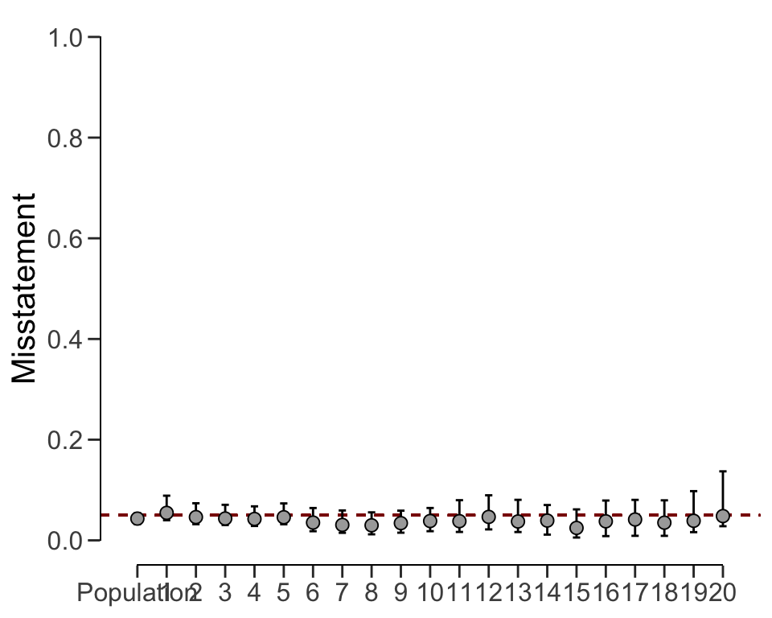
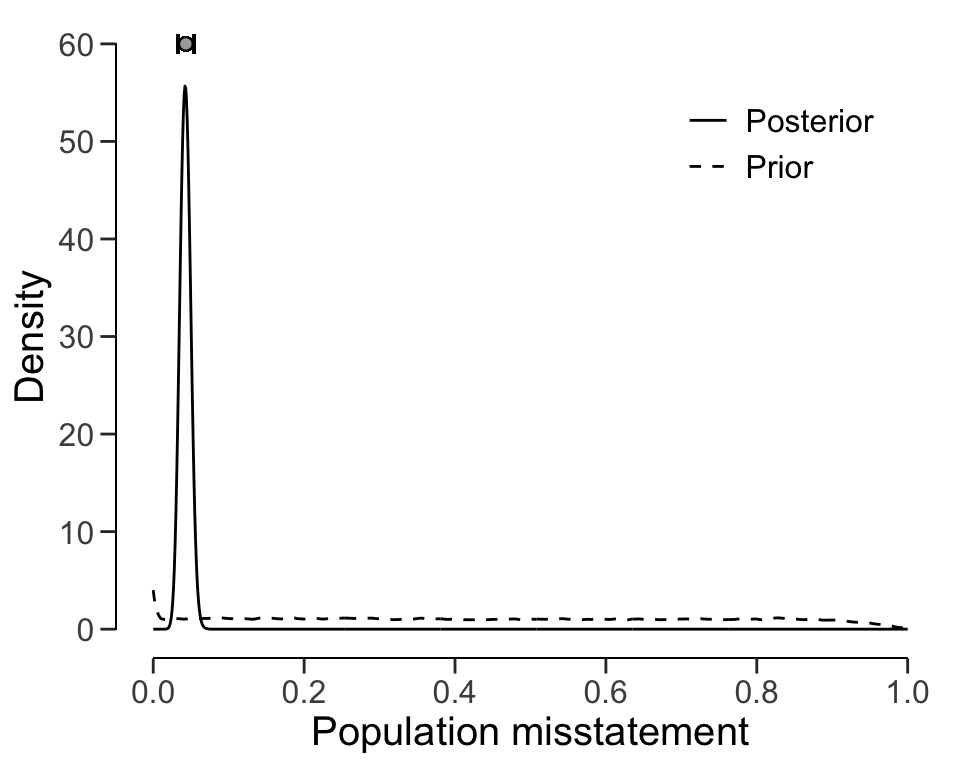
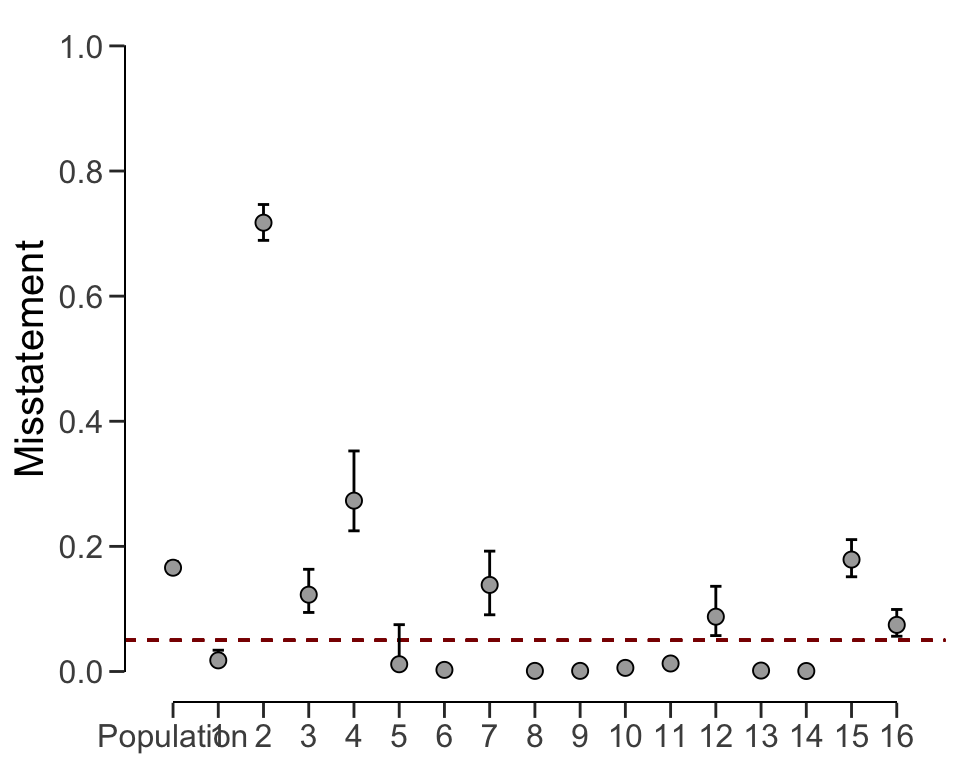
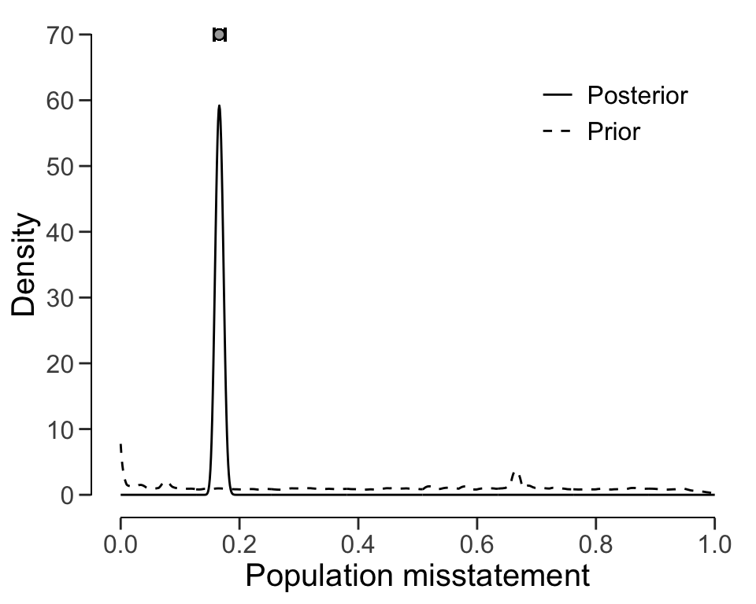

7 Stratified Evaluation
In the realm of audit sampling, the practice of stratified sampling is a powerful technique that enables auditors to enhance the accuracy and representativeness of their samples. Stratified sampling is a strategy employed in audit sampling where the population is divided into distinct subgroups or strata based on relevant characteristics. These characteristics could include geographical location, department, business unit, or any other factor that might influence the distribution of errors or misstatements. By segregating the population into strata, auditors can ensure that their sample captures the diversity of the entire population. This chapter delves into the intricacies of stratified evaluation, exploring three distinct approaches—no pooling, complete pooling, and partial pooling—each with its own advantages and trade-offs. Knowledge of these three approaches is crucial for auditors aiming to optimize their statistical evaluation and generate robust population estimates.
Consider an example of auditing expense claims in a large organization. Instead of treating all expense claims as a uniform entity, auditors can stratify the claims based on the departments they belong to. This approach ensures that the audit sample includes a representative mix of claims from different departments, thereby reducing the risk of overlooking specific areas of concern. Another example of such a situation would be a group audit where the audited organization consists of different components or branches. Stratification is relevant for the group auditor if they must form an opinion on the group as a whole because they must aggregate the samples taken by the component auditors.
In general, there are three approaches to evaluating a stratified sample: no pooling, complete pooling, and partial pooling. No pooling assumes no similarities between strata, which means that all strata are analyzed independently. Complete pooling assumes no difference between strata, which means that all data is aggregated and analyzed as a whole. Finally, partial pooling assumes differences and similarities between strata, which means that information can be shared between strata. Partial pooling (i.e., hierarchical modeling) is a powerful technique that can result in more efficient population and stratum estimates.

As a data example, consider the retailer data set that comes with the package. The organization in question consists of 20 branches across the country. In each of the 20 strata, a component auditor has taken a statistical sample and reported the outcomes to the group auditor.
The number of units per stratum in the population can be provided with N.units to weigh the stratum estimates to determine population estimate. This is called poststratification. If N.units is not specified, each stratum is assumed to be equally represented in the population.
7.1 No pooling
No pooling (pooling = "none", default) assumes no similarities between strata. This means that the prior distribution specified through prior is applied independently for each stratum. This allows for independent estimates for the misstatement in each stratum but also results in a relatively high uncertainty in the population estimate. Assuming a binomial likelihood and a beta(\(\alpha\), \(\beta\)) prior on \(\theta\) (these choices may differ among analysts), the statistical model applied in the no pooling approach is the following:
\[\begin{align} k_s &\sim \text{Binomial}(n_s, \theta_s)\\ \theta_s &\sim \text{Beta}(\alpha, \beta)\\ \theta &\leftarrow \frac{\sum \theta_s N_s}{N} \end{align}\]
The call below evaluates the sample using a Bayesian stratified evaluation procedure, in which the stratum estimates are poststratified to arrive at the population estimate. Since the posterior distribution is determined via sampling it is important to use set.seed() to make the results reproducible.
set.seed(1)
result_np <- evaluation(
materiality = 0.05,
method = "binomial",
n = retailer[["samples"]],
x = retailer[["errors"]],
N.units = retailer[["items"]],
alternative = "two.sided",
pooling = "none",
prior = TRUE
)
result_np
#>
#> Bayesian Audit Sample Evaluation
#>
#> data: 115 and 2575
#> number of errors = 115, number of samples = 2575, taint = 115, BF₁₀
#> = 0
#> alternative hypothesis: true misstatement rate is not equal to 0.05
#> 95 percent credible interval:
#> 0.04276326 0.08220109
#> most likely estimate:
#> 0.0598
#> results obtained via method 'binomial' + 'no-pooling' + 'prior'In this case, the output of the summary() function shows that the estimate of the misstatement in the population is 5.98 percent, with the 95 percent credible interval ranging from 4.28 percent to 8.22 percent. The stratum estimates can be visualized using the plot() function in combination with type = "estimates, see Figure 7.2. Estimation plots display stratum estimates and their uncertainties, revealing the differences and overlaps between strata. As the figure shows, the stratum estimates differ substantially from each other but are relatively uncertain.
plot(result_np, type = "estimates")Posterior distribution plots provide insights into how the prior beliefs evolve after considering the data, showcasing the gradual convergence of information. The prior and posterior distribution for the population misstatement can be requested via the plot() function, see Figure 7.3.
plot(result_np, type = "posterior")7.2 Complete pooling
Complete pooling (pooling = "complete") assumes no differences between strata. This has the advantages that data from all strata can be aggregated, which decreases the uncertainty in the population estimate compared to the no pooling approach. However, the disadvantage of this approach is that it does not facilitate the distinction between between strata, as every stratum receives the same estimate equal to that of the population, see Figure 7.4. Assuming a binomial likelihood and a beta(\(\alpha\), \(\beta\)) prior on \(\theta\), the statistical model applied in the complete pooling approach is the following:
\[\begin{align} k &\sim \text{Binomial}(n, \theta)\\ \theta &\sim \text{Beta}(\alpha, \beta) \end{align}\]
The call below evaluates the sample using a Bayesian stratified evaluation procedure, in which the strata are assumed to be the same.
result_cp <- evaluation(
materiality = 0.05,
method = "binomial",
n = retailer[["samples"]],
x = retailer[["errors"]],
N.units = retailer[["items"]],
alternative = "two.sided",
pooling = "complete",
prior = TRUE
)
result_cp
#>
#> Bayesian Audit Sample Evaluation
#>
#> data: 115 and 2575
#> number of errors = 115, number of samples = 2575, taint = 115, BF₁₀
#> = 0.022725
#> alternative hypothesis: true misstatement rate is not equal to 0.05
#> 95 percent credible interval:
#> 0.03735031 0.05334542
#> most likely estimate:
#> 0.04466
#> results obtained via method 'binomial' + 'complete-pooling' + 'prior'For example, the output of the summary() function shows that the estimate of the misstatement in the population is 4.47 percent, with the 95 percent credible interval ranging from 3.74 percent to 5.34 percent. Since the data is aggregated, the stratum estimates contain relatively little uncertainty. However, the probability of misstatement in stratum 20 (many misstatements) under this assumption is the same as that of stratum 15 (few misstatements).
plot(result_cp, type = "estimates")
The prior and posterior distribution for the population misstatement can be requested via the plot() function, see Figure 7.5.
plot(result_cp, type = "posterior")7.3 Partial pooling
Finally, partial pooling (pooling = "partial") assumes differences and similarities between strata. This allows the auditor to differentiate between strata, while also sharing information between the strata to reduce uncertainty in the population estimate. Assuming a binomial likelihood and a beta prior for \(\theta\), the statistical model applied in the partial pooling approach is the following:
\[\begin{align} k_s &\sim \text{Binomial}(n_s, \theta_s)\\ \theta_s &\sim \text{Beta}(\phi \nu, (1 - \phi) \nu)\\ \phi &\sim \text{Beta}(\alpha, \beta)\\ \nu &\sim \text{Pareto}(50, \frac{3}{2})\\ \theta &\leftarrow \frac{\sum \theta_s N_s}{N} \end{align}\]
The call below evaluates the sample using a Bayesian stratified evaluation procedure, in which the stratum estimates are poststratified to arrive at the population estimate.
set.seed(1)
result_pp <- evaluation(
materiality = 0.05,
method = "binomial",
n = retailer[["samples"]],
x = retailer[["errors"]],
N.units = retailer[["items"]],
alternative = "two.sided",
pooling = "partial",
prior = TRUE
)
result_pp
#>
#> Bayesian Audit Sample Evaluation
#>
#> data: 115 and 2575
#> number of errors = 115, number of samples = 2575, taint = 115, BF₁₀
#> = 0.023477
#> alternative hypothesis: true misstatement rate is not equal to 0.05
#> 95 percent credible interval:
#> 0.03269993 0.05346202
#> most likely estimate:
#> 0.0417
#> results obtained via method 'binomial' + 'partial-pooling' + 'prior'In this case, the output shows that the estimate of the misstatement in the population is 4.17 percent, with the 95 percent credible interval ranging from 3.26 percent to 5.35 percent. Note that this population estimate is substantially less uncertain than that of the no pooling approach. Figure 7.7 visualizes the population and stratum estimates. Note that, like in the no pooling approach, the stratum estimates are different from each other but lie closer together and are less uncertain.
plot(result_pp, type = "estimates")
The prior and posterior distribution for the population misstatement can be requested via the plot() function, see Figure 7.8.
plot(result_pp, type = "posterior")
7.4 Evaluation using data
To illustrate these concepts using data, let’s consider the allowances dataset included in the package, which contains 3500 financial statement line items with book values (bookValue) and, for illustrative purposes, audited (true) values (auditValue) across different branches. Since the focus of this chapter is the evaluation stage in the audit, the sample is already indicated in the data set. The performance materiality in this example is set to 5 percent.
Evaluating a stratified sample using data requires specification of the data, values, values.audit and strata arguments in the evaluation() function. In this case, the units are monetary and calculated by aggregating the book values of the items in each stratum.
7.4.1 Classical Evaluation
Using classical evaluation, auditors can apply stratified evaluation to assess the population misstatement rate. The estimates obtained under this approach reflect independent evaluation of each stratum, potentially leading to a relatively high uncertainty in the overall population estimate. The statistical model for this evaluation using the Poisson likelihood is relatively simple:
\[\begin{align} t_s &\sim \text{Poisson}(n_s\theta_s)\\ \theta &\leftarrow \frac{\sum \theta_s N_s}{N} \end{align}\]
The call below evaluates the allowances sample using a classical stratified evaluation procedure, in which the stratum estimates are poststratified to arrive at the population estimate.
set.seed(1)
result_dnpc <- evaluation(
materiality = 0.05,
data = allowances,
N.units = N.units,
values = "bookValue",
values.audit = "auditValue",
strata = "branch",
times = "times",
alternative = "two.sided",
pooling = "none"
)
result_dnpc
#>
#> Classical Audit Sample Evaluation
#>
#> data: allowances
#> number of errors = 401, number of samples = 1604, taint = 252.93,
#> p-value = NA
#> alternative hypothesis: true misstatement rate is not equal to 0.05
#> 95 percent confidence interval:
#> 0.1254576 0.1827606
#> most likely estimate:
#> 0.14723
#> results obtained via method 'poisson' + 'no-pooling'In this case, the output shows that the estimate of the misstatement in the population is 14.72 percent, with the 95 percent confidence interval ranging from 12.55 percent to 18.28 percent. The precision of the population estimate is 5.73 percent. The stratum estimates can be seen in the output of the summary() function and are visualized in Figure 7.9 below.
plot(result_dnpc, type = "estimates")
7.4.2 Bayesian Evaluation
Bayesian inference can improve upon the estimates of the classical approach by pooling information between strata where possible. The statistical model for this evaluation using the multilevel model with the use of taints is relatively complex:
\[\begin{align} t_i,s &\sim \text{Beta}(\theta_s \kappa_s, (1 - \theta_s) \kappa_s)\\ \theta_s &\sim \text{Beta}(\phi \nu, (1 - \phi) \nu)\\ \kappa_s &\sim \text{Normal}(\mu, \sigma)^{+}\\ \phi &\sim \text{Beta}(\alpha, \beta)\\ \nu &\sim \text{Pareto}(50, \frac{3}{2})\\ \mu &\sim \text{Normal}(1, 100)^{+}\\ \sigma &\sim \text{Normal}(0, 10)^{+}\\ \theta &\leftarrow \frac{\sum \theta_s N_s}{N} \end{align}\]
The call below evaluates the allowances sample using a Bayesian multilevel stratified evaluation procedure, in which the stratum estimates are poststratified to arrive at the population estimate.
set.seed(1)
result_dnpb <- evaluation(
materiality = 0.05,
method = "binomial",
data = allowances,
N.units = N.units,
values = "bookValue",
values.audit = "auditValue",
strata = "branch",
times = "times",
alternative = "two.sided",
pooling = "partial",
prior = TRUE
)
result_dnpb
#>
#> Bayesian Audit Sample Evaluation
#>
#> data: allowances
#> number of errors = 401, number of samples = 1350, taint = 224.66,
#> BF₁₀ = Inf
#> alternative hypothesis: true misstatement rate is not equal to 0.05
#> 95 percent credible interval:
#> 0.1466010 0.1630621
#> most likely estimate:
#> 0.1536
#> results obtained via method 'binomial' + 'partial-pooling' + 'prior'The output shows that the estimate of the misstatement in the population is 15.36 percent, with the 95 percent credible interval ranging from 14.66 percent to 16.31 percent. The precision of the population estimate is 1.65 percent, which is substantially lower than that of the classical approach. The stratum estimates can be seen in the output of the summary() function and are visualized in Figure 7.10 below.
plot(result_dnpb, type = "estimates")
The prior and posterior distribution for the population misstatement can be requested via the plot() function, see Figure 7.11.
plot(result_dnpb, type = "posterior")
Stratified evaluation is a pivotal tool in an auditor’s arsenal, allowing for the analysis of diverse populations with varying characteristics. By embracing the principles of no pooling, complete pooling, and partial pooling, auditors can tailor their evaluation strategies to balance independence and shared information, resulting in more accurate and reliable population estimates. The combination of these approaches with real-world data offers auditors a comprehensive toolkit to enhance the quality and efficiency of their evaluations.
7.5 Practical Exercises
- Evaluate a stratified sample of \(n_s\) = [30, 40, 50] items containing \(k_s\) = [0, 1, 2] misstatements. Use the classical approach.
Click to reveal answer
To evaluate a stratified sample using the classical approach, the evaluation() function can be used with the default arguments.
evaluation(n = c(30, 40, 50), x = c(0, 1, 3), method = "binomial")
#>
#> Classical Audit Sample Evaluation
#>
#> data: 4 and 120
#> number of errors = 4, number of samples = 120, taint = 4
#> 95 percent confidence interval:
#> 0.00000000 0.08896187
#> most likely estimate:
#> 0.028333
#> results obtained via method 'binomial' + 'no-pooling'